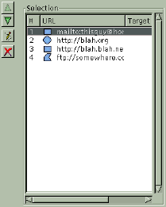

| © 1999 Michael J. Hammel |
|
|  |
|
dialog. Notice the URL #'s. The higher the number, the higher the precedence that area takes for regions that overlap. |
To create a new rectangular or circular shaped area, click once to drag the shape then click again to anchor it. Doing this opens the area settings dialog so you can specify the URL to associate with the area. The polygonal area shape works similarly, except that a double click is required to end the shape and open the attributes dialog. Additionally, with polygonal shapes a left mouse button click will anchor a new vertices for the shape. A right mouse button click will delete the vertices in reverse order.
To edit the shapes, click on their URLs in the Selection window or click on the shapes outline while the Select Existing Area button (the button with the arrow along the left side of the dialog window) is enabled. Note that when you edit the shapes size by dragging one of the handles on the shapes outline that the snap to grid function is no longer in effect. I don't know if this was intentional or not, however. Don't be suprised to see this change to match the current grid settings in later releases.
Once you've set the URLs for shapes, you can change their positions in the map. The lower in the list the higher precedence that area takes. This is important for areas which overlap. Notice in the example of the Selection window that there are 4 areas defined. Area 4 will take precedence over area 3 any place the two areas overlap.
Now that you have a number of areas defined, what does the HTML code for this image map look like? Here is the source for the example at left:
<IMG SRC="/home/mjhammel/src/graphics/scenes/stock/ttu-ontour-97.pnm" WIDTH=300 HEIGHT=359 BORDER=0 USEMAP="#">Notice that the source images URL is taken to be the path to the image I've opened in the Gimp. I looked around the plug-in but couldn't find a way to change this. You apparently have to edit the HTML code manually. There is an option to set a default URL, using the Info icon, but you can't change the source reference for the image. One you have this HTML output to a file you'll need to find some way of importing it into your real HTML file. The Image Map plug-in does not currently allow you to place this code directly into an existing HTML file.<MAP NAME="">
<!-- #$-:Image Map file created by GIMP Imagemap Plugin -->
<!-- #$-:GIMP Imagemap Plugin by Maurits Rijk -->
<!-- #$-:Please do not edit lines starting with "#$" -->
<!-- #$VERSION:1.1 -->
<!-- #$AUTHOR:Michael J. Hammel -->
<AREA SHAPE="RECT" COORDS="15,15,285,135" HREF="mailto:thisguy@home.org">
<AREA SHAPE="CIRCLE" COORDS="75,135,67" HREF="http://blah.org">
<AREA SHAPE="RECT" COORDS="60,285,255,345" HREF="http://blah.blah.net">
<AREA SHAPE="POLY" COORDS="285,15,195,15,195,60" HREF="ftp://somewhere.com">
<AREA SHAPE="DEFAULT" HREF="http://www.graphics-muse.org/blah/ttu-ontour-98.jpg">
</MAP>
Unfortunately, I found, along with quite a few bugs with the 1.1.1 release, that the Image Map plug-in doesn't do many of the things I would like. First, the polygonal area tool is really difficult to use. For some reason, it won't accept my double clicks to end a polygon shape definition unless I double click and don't move my mouse for a split second afterwards. If I double click and move too quickly I get all sorts of line drawings from the last vertices created to the current mouse location. It looks something like a star burst shape. In any case, it's not what was expected. The unwanted star burst design will go away if you cover and then uncover the Image Map window with another window (forcing a window update for the Image Map plug-in). However, getting out of that mode seems to require backing completely out of the polygon by right mouse clicking until all vertices have been removed. At this point, the extra line drawing seems to stop.
Another nit pick of mine is that the up and down buttons for URLs moves the selected item to the top or bottom of the list, not up or down one list item. I feel a little like I'm playing the Towers of Hanoi trying to arrange the URLs. And I can't specify the path to the image source without hand editing the saved HTML that the plug-in outputs to file.
Zoom takes a little while to work - it zooms the whole image and doesn't appear to let you specify the area to focus in on. I suspect it uses it's own zooming algorithm and not the Gimp's since the Gimp's zoom is considerably faster. Or maybe it just takes longer to recompute image map area shapes. I also don't like the fact that changes to width, height or other shape attributes don't automatically update the display. I think automatic updates should probably be a user configurable preference.
As for bugs, there were a number that were difficult to recreate. Aside from the problem with the polygons and double clicking, I noticed at one point that the height of my first rectangular selection, as displayed in the settings dialog, was only 1 pixel high. But most of the bugs I found were minor and self correcting. None seemed to cause the final HTML output to be corrupted in any way.
Although I might prefer changes to certain aspects of the interface, I find Maurits' Image Map plug-in for the Gimp to be stable, easy to use and produces syntactically correct HTML. If you do a fair amount of image map work, or even if you'd just like to create one just for grins, you owe it to yourself to take a look at this plug-in. It may just easy your life just a bit.
|
| © 1999 by Michael J. Hammel |